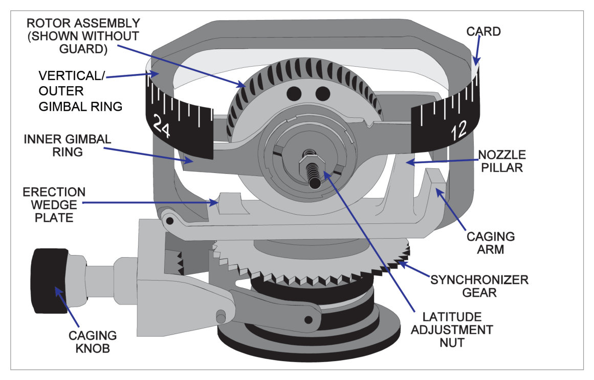
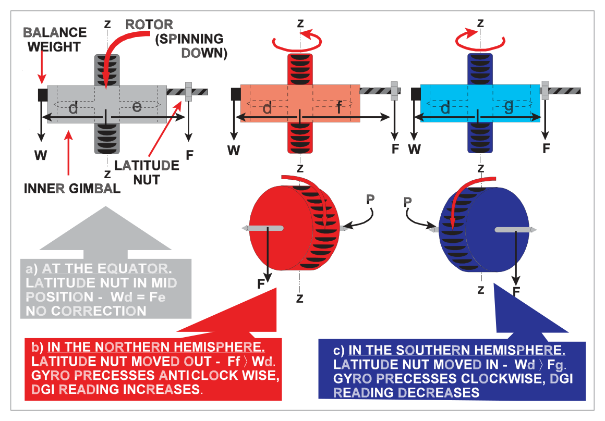
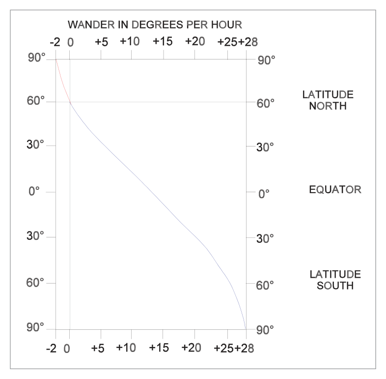

What this section covers: Purpose of the DGI, its relationship to the magnetic compass, and its key advantage of dead-beat heading indications free from magnetic turning and acceleration errors.
The Directional Gyro Indicator (DGI), also called the Direction Indicator (DI), provides a stable directional reference in azimuth for maintaining accurate headings and executing precise turns.
There is no magnetic element in the DI, so it is not north-seeking and must initially be synchronized with the magnetic compass. Synchronization must be checked at regular intervals because of real and apparent gyro wander (drift). The DGI does not replace the compass — its stable, dead-beat indications are complementary to the north-seeking capability of the compass.
Having no magnetic element, the DGI does not suffer from the compass turning and acceleration errors produced by the vertical component of the earth's magnetic field.
What this section covers: Gimbal arrangement, gyro type (tied), rotor axis orientation, and how heading is displayed.
The DI employs a tied gyro — a gyro having freedom of movement in three planes mutually at right angles, but with the rotor axis maintained in the yawing plane of the aircraft. This means the rotor axis is horizontal in level flight, and gyroscopic rigidity provides the datum from which heading is measured.
The rotor is mounted in the inner gimbal (on bearings in the outer gimbal), which has restricted freedom to turn. The outer gimbal can rotate through 360° about the aircraft's vertical axis, on bearings in the case.
Note that the rotor axis, inner gimbal axis, and outer gimbal axis are mutually at right angles.
During a turn, the aircraft and instrument case turn on the vertical axis bearings of the outer gimbal whilst the gyro rotor, gimbals and indicating scale all remain fixed in azimuth because of gyroscopic rigidity. Heading is indicated on the scale by a lubber line painted on a glass window in the instrument case.

Fig 12.2 — An air driven directional gyro. Source p.155
3. Control System — Suction Gyros
What this section covers: How air jets and the wedge plate maintain the rotor axis in the yawing plane; two complementary erection systems.
With earlier designs of DGI, the rotor is driven by twin jets of air applied from the outer gimbal ring. Suction is applied to the case; replacement air enters through a filter and is ducted to jets on the outer gimbal which act on 'buckets' cut in the rotor.
The jets not only spin the rotor but also serve to maintain or tie the rotor axis in the yawing plane.
First Control System — Air Jet Erection
When the rotor axis is in the yawing plane, the full force X of the jets drives the rotor. If the aircraft banks, gyroscopic rigidity keeps the rotor axis fixed in space — it is no longer in the yawing plane. Force X is then resolved into:
Component Y — in the plane of rotation, maintaining spin.
Component Z — acting at 90° to the plane of rotation.
Because this is a gyro, Component Z precesses the rotor as if it were applied 90° around the circumference in the direction of spin. The result is a force Q operating to re-erect the rotor with its axis in the yawing plane.
Air spinning the rotor flows round the rotor inside a metal case and is directed at a wedge plate fixed to the outer gimbal. When the gyro is correctly erected, the exhaust jet is divided into two equal streams producing equal reactions (R1 & R2) on the outer gimbal. When the rotor axis is displaced from the yawing plane, streams become unbalanced, producing an unequal reaction that applies a torque to the outer gimbal about the vertical gyro axis. This torque is precessed to re-erect the rotor axis.
Exam Tip:Jets provide coarse adjustment; the wedge plate provides fine adjustment. This two-system approach is a common exam point.
4. The Caging Device
What this section covers: Construction and purpose of the caging knob.
On the front of the instrument there is a caging knob which, when pushed in, moves a caging arm that locks the inner gimbal at right angles to the outer gimbal (locking the rotor axis in the yawing plane). A gear simultaneously engages with the outer gimbal so that turning the knob rotates the gyro and synchronizes the scale reading with (usually) the compass reading.
Purposes of the Caging Device:
Allows synchronization of the DGI with the compass and resetting as required.
Prevents the gyro from toppling during synchronization.
Prevents toppling and possible damage before manoeuvres in which pitch and roll limits may be exceeded.
Allows instant re-erection and re-synchronization if the gyro has toppled.
5. DGI Limitations
LIMITATION — Toppling: If the aircraft exceeds the pitch or roll limits, the gyro will topple.
Air driven DGI: 55° pitch / roll limit.
Modern DGI: 85° pitch / roll limit.
When toppled, the inner gimbal hits its stops, causing precession that makes the outer gimbal and scale spin rapidly.
Exceptions to toppling:
If the rotor axis is athwartships — 360° of aircraft rotation in the looping plane is then possible without toppling.
If the rotor axis is fore and aft — 360° of roll is then possible without toppling.
Exam Tip: "Modern DGI = 85°, Air-driven DGI = 55°" — both pitch and roll for each type. The question asks about a modern DGI's limits — the answer is 85° and 85°.
6. DGI Errors — Summary
What this section covers: Overview of all DGI error types.
There are several reasons why it is virtually impossible for a DGI to remain synchronized with the compass. The most significant errors are:
Gimballing errors.
Random wander.
Apparent wander due to earth's rotation.
Errors resulting from varying rotor rpm.
Apparent wander due to change of aircraft position (transport wander).
flowchart TD
A[DGI Errors] --> B[Gimballing Errors\nDue to gimbal geometry\nin banked turns]
A --> C[Random Wander\nReal wander from\nmanufacturing imperfections]
A --> D[Apparent Wander\nDue to Earth's rotation\n15 × sin lat °/h]
A --> E[Unstable Rotor RPM\nAffects precession rate\nand latitude correction]
A --> F[Transport Wander\nMovement between\nnon-parallel meridians]
7. Gimballing Errors
What this section covers: Errors arising from gimbal geometry during banked manoeuvres.
Gimballing errors are errors in DGI indications which occur when bank is applied. If the errors during a 360° turn are plotted, an approximate double sine curve results, with zero error on four headings (90° apart) spaced between alternate positive and negative peaks (two of each).
The errors are small provided deviations in attitude from level are only moderate, and they disappear as soon as level flight is resumed. They occur because of the geometry of the gimbal system — unless the instrument case (and aircraft) can rotate about one of the gyro axes, the outer gimbal itself must move (giving an error) if the rotor axis is to maintain its fixed direction.
Exam Tip: Gimballing errors disappear as soon as level flight is resumed. They are zero on four headings during a 360° turn.
8. Random Wander
What this section covers: Real wander due to manufacturing imperfections and typical drift rates.
The gyro rotor axis may change its direction in space (real wander) or appear to change direction (apparent wander). Random wander (or drift) is mainly due to manufacturing imperfections.
DGI Type
Rotor Speed
Drift Rate
Air driven (older)
10,000 rpm
≈ 1.6°/hour
Air driven (later)
20,000 rpm
≈ 1.2°/hour
Electrically driven
Higher speeds
A few °/hour
Inertial navigation gyros
Very high
< 0.01°/hour
9. Apparent Wander Due to Rotation of the Earth
What this section covers: The fundamental formula for apparent wander, latitude dependence, and hemisphere rules.
An azimuth gyro at the North Pole (rotor axis horizontal) will have its reading decrease at a rate of 15°/hour (at the South Pole, the reading increases at the same rate). This is the maximum apparent drift rate.
At the equator, an observer and gyro aligned N/S will move with the earth through 360° in 24 hours with no change in rotor axis direction relative to the meridian — so there is zero apparent drift at the equator.
Fig 12.11 — Rate of apparent wander on an uncorrected gyro vs. latitude. Source p.161
Quick Memory Aid: "North — Negative. South — Positive." or "NNEQ": Northern = Negative; Equator = zero.
10. Latitude Nut Correction
What this section covers: How the adjustable latitude rider nut compensates for apparent wander, its limitations, and the effect of latitude changes.
Compensation for apparent wander due to the earth's rotation is by means of an adjustable latitude rider nut on a threaded stud fixed horizontally to the inner gimbal.
In its central position, the effect of the nut is cancelled by a counter-balance weight on the opposite side of the gimbal.
Screwed out: Applies a downward moment → anticlockwise precession (viewed from above) → DGI reading increases.
This enables compensation for both increasing readings (southern hemisphere) and decreasing readings (northern hemisphere).

Fig 12.12 — Latitude nut compensation for apparent wander. Source p.162
LIMITATION — Workshop Only: The latitude nut setting can only be changed under workshop conditions (not in the aircraft). Compensation will only be correct for the chosen latitude. If a change of operating area involves a latitude change of the order of 60°, a DGI with the appropriate latitude correction would probably be substituted.
Effect of Latitude Correction on Gyro Behaviour
Figure 12.13 illustrates the effect of compensating a gyro for apparent drift of −13°/h at 60°N (= 15 sin 60°). The latitude nut introduces a real drift of +13°/h so the resultant drift is zero at 60°N.

Fig 12.13 — Gyro corrected for 60°N: residual drift at other latitudes. Source p.163
Key Rules for Compensated DGI:
Flight north from the corrected latitude → DGI reading decreases (minus drift rate).
Flight south from the corrected latitude → DGI reading increases (plus drift rate).
Flight away from the corrected latitude → drift rate increases.
Flight towards the corrected latitude → drift rate decreases.
11. Effect of Change of Aircraft Latitude on Compensated DGI
What this section covers: How apparent drift rate changes as an aircraft moves between latitudes during flight.
The apparent drift rate varies with the sine of latitude. Consider a flight due north starting from the equator:
At equator: drift rate = 0°/h
At 30°N: drift rate = 7.5°/h (decreasing)
At 60°N: drift rate = 13°/h (decreasing)
At 90°N (pole): drift rate = 15°/h (decreasing)
The rate of increase of drift rate is not linear — it follows the sine function. The same applies to a compensated gyro moving north or south from its correction latitude.
12. Errors Due to Unstable Rotor RPM
What this section covers: How rotor speed variations affect the accuracy of latitude nut compensation.
Since the precession rate depends on rotor rpm, over which no precise control is maintained in a suction-driven DGI, latitude nut compensation is only approximate.
Condition
Effect on RPM
Effect on Rigidity
Result
High altitude / choked filter / leaking suction
Below design value (underspeeding)
Reduced
Latitude nut over-corrects apparent drift
RPM exceeds design figure
Above design value (overspeeding)
Increased
Latitude nut under-corrects apparent drift
13. Transport Wander
What this section covers: Apparent drift caused by the aircraft moving between meridians.
At any latitude other than the equator, meridians (which define local north) are not parallel. If the gyro is aligned to one meridian, then the aircraft is flown east to west, the new meridian will be inclined to the old one by an amount known as transport wander.
Exam Tip: Transport wander is zero at the equator (meridians are parallel there) and maximum at the poles. It is distinct from apparent wander due to the earth's rotation, which occurs even when the aircraft is stationary.
14. Drift Rate Calculations
What this section covers: Worked examples applying the apparent drift formula.
Apparent Drift Rate = 15 × sin(latitude) °/hour
Variables: 15 = earth's rotation rate in °/hour; latitude = aircraft's latitude in degrees.
Sign: Negative (reading decreases) in northern hemisphere; positive (reading increases) in southern hemisphere.
Worked Example 1
Problem: An aircraft is stationary at 60°N. Calculate the hourly wander rate for an uncompensated gyro.
All 10 questions below are reproduced verbatim from the Oxford source. Answer key confirmed from source: 1-b, 2-d, 3-c, 4-c, 5-b, 6-c, 7-c, 8-b, 9-d, 10-a.
Q1.A directional gyro indicator is basically a:
horizontal axis earth gyro
horizontal axis tied gyro
vertical axis earth gyro
vertical axis tied gyro
Correct Answer: (b) horizontal axis tied gyro
Explanation: The DGI employs a tied gyro (not a free/earth gyro) because its rotor axis is maintained in the yawing plane of the aircraft by the erection system (air jets + wedge plate). The rotor axis is horizontal in level flight (not vertical). See Section 2.
Why the other options are wrong:
(a) — An earth gyro is free to orientate itself relative to the earth's gravity — the DGI is tied, not free.
(c) — The spin axis of the DGI is horizontal (in the yawing plane), not vertical. A vertical axis would describe the artificial horizon.
(d) — Tied is correct but vertical axis is wrong for the same reason as (c).
Instructor's Note: The distinction between "earth gyro" and "tied gyro" is critical. Earth gyro = spin axis free. Tied gyro = spin axis maintained in a specific plane by an erection system. The DGI ties its axis to the yawing plane; the AH ties its axis to the vertical.
Q2.Apparent drift may be corrected in a DGI by:
causing the gyro to precess in a clockwise direction (in the northern hemisphere)
attaching a bias weight to the inner gimbal which makes the gyro precess in azimuth in the same direction as apparent wander
correcting wander by means of air jets
attaching a bias weight to the inner gimbal which makes the gyro precess in azimuth in the opposite direction to apparent wander
Correct Answer: (d) attaching a bias weight (latitude nut) to the inner gimbal which makes the gyro precess in azimuth in the opposite direction to apparent wander
Explanation: The latitude nut (rider nut) on the inner gimbal introduces a real drift that is equal and opposite to the apparent drift at the chosen latitude. In the northern hemisphere, apparent drift causes the reading to decrease (negative), so the nut is set to produce a positive (increasing) drift to cancel it. See Section 10.
Why the other options are wrong:
(a) — In NH, apparent drift causes a decrease (anticlockwise). The correction must produce the opposite (increase/clockwise) — so "clockwise" alone is actually in the right direction but this option is incomplete and misleading, plus (d) is the precise mechanism.
(b) — Precessing in the same direction as apparent wander would amplify the error, not correct it.
(c) — Air jets are part of the erection system to keep the rotor in the yawing plane, not for apparent wander correction.
Instructor's Note: The latitude nut is an example of "fighting fire with fire" — introducing a controlled real drift to cancel an uncontrolled apparent drift.
Q3.An air driven DGI is corrected for apparent wander at 56°N. If the aircraft is maintaining constant DGI readings:
when flying north from 56°N the true heading of the aircraft will decrease
when flying east from 56°N the true heading will decrease
when flying south from 56°N the true heading will decrease
when flying west from 56°N the true heading will increase
Correct Answer: (c) when flying south from 56°N the true heading will decrease
Explanation: The DGI is corrected (latitude nut set) for 56°N, meaning the nut produces a +12.9°/h real drift (to counter the apparent −12.9°/h at 56°N). When the aircraft flies south, the apparent drift rate reduces (lower latitude, lower sin value), but the latitude nut still applies its fixed +12.9°/h over-correction. The net drift is positive (reading increases on the DGI). If the DGI reading is held constant, the pilot is correcting for the increase by turning the aircraft onto a heading that is west of north. West of north means the true heading is decreasing. See Section 10.
Why the other options are wrong:
(a) — Flying north, apparent drift increases (more negative), exceeding the latitude nut correction. Net drift is negative (DGI reads lower). To maintain constant DGI, the pilot turns eastward — true heading increases, not decreases.
(b) — Flying east changes longitude but not latitude significantly, so apparent drift remains approximately the same as at 56°N and the net is near zero. True heading would not drift consistently.
(d) — Flying west is similar to (b) for the same reason.
Instructor's Note: This question tests understanding of the cumulative effect of residual drift. If the DGI is over-corrected (reading increases), maintaining a constant DGI reading means the aircraft's true heading must be drifting left (decreasing).
Q4.The formula used to calculate apparent wander of a directional gyro in the northern hemisphere is:
+15 sine latitude in degrees for the time of running
+15 sine latitude in degrees per hour
−15 sine latitude in degrees per hour
15 sine latitude in degrees per hour increasing
Correct Answer: (c) −15 sine latitude in degrees per hour
Explanation: In the northern hemisphere, the DGI reading decreases due to earth's rotation — hence the negative sign. The formula is: Apparent Drift Rate = −15 × sin(latitude) °/hour. See Section 9.
Why the other options are wrong:
(a) and (b) — Positive sign is incorrect for the northern hemisphere (positive would apply in the southern hemisphere).
(d) — "Increasing" is incorrect; in the NH the DGI reading decreases (the drift is negative).
Instructor's Note: The sign is the whole point here. Southern hemisphere = +15 sin lat (reading increases). Northern hemisphere = −15 sin lat (reading decreases).
gimballing error, random wander, apparent wander, rotor speed error, transport wander
gimballing error, looping error, rolling error, rotor speed error, transport wander
transport wander, apparent wander, latitude error, turning error, acceleration error
Correct Answer: (b) gimballing error, random wander, apparent wander, rotor speed error, transport wander
Explanation: These are the five principal errors listed in the textbook. The DGI has no magnetic element, so it has no acceleration or turning errors in the compass sense. See Section 6.
Why the other options are wrong:
(a) — "Acceleration error" and "turning error" are compass errors, not DGI errors. The DGI is unaffected by the vertical component of earth's field.
(c) — "Looping error" and "rolling error" are not standard DGI error categories.
(d) — "Latitude error" and "turning error" are not in the standard list; "latitude error" is subsumed under apparent wander.
Q6.The spin axis of a directional gyro is maintained in ....... by means of ...... in an air driven gyro and by means of a ....... in an electrically driven gyro.
the horizontal plane; air jets; wedge plate
the vertical plane; air jets; torque motor
the yawing plane; air jets; torque motor
the yawing plane; air jets; wedge plate
Correct Answer: (c) the yawing plane; air jets; torque motor
Explanation: The DGI rotor axis is maintained in the yawing plane (not simply "horizontal plane"). Air-driven DGIs use air jets (and wedge plate as fine adjustment). Electrically driven DGIs use a torque motor instead of air jets and wedge plate. See Section 3.
Why the other options are wrong:
(a) — "Horizontal plane" is too vague; "yawing plane" is the precise term. Also "wedge plate" alone is fine adjustment, not the primary method.
(b) — "Vertical plane" is wrong — that would describe the AH rotor axis.
(d) — "Wedge plate" is used with air-driven, but for electrical DGIs the torque motor is the correct answer, not wedge plate.
Instructor's Note: Air-driven = air jets (+ wedge plate fine adjustment). Electrical = torque motors. The yawing plane is the key term for the DGI, contrasted with the AH which uses the vertical.
Q7.The purpose of the caging knob is:
to prevent the gyro toppling
to reset the heading
to reset the heading and to prevent toppling
to prevent apparent wander
Correct Answer: (c) to reset the heading and to prevent toppling
Explanation: The caging knob serves two purposes: (1) locking the inner gimbal to prevent toppling during synchronization or violent manoeuvres, and (2) allowing the scale to be rotated for synchronization with the compass. See Section 4.
Why the other options are wrong:
(a) — Partially correct but incomplete; it also resets heading.
(b) — Partially correct but incomplete; it also prevents toppling.
(d) — Apparent wander is corrected by the latitude nut, not the caging knob.
Instructor's Note: Classic "incomplete answer" trap. Both functions are needed for full credit.
Q8.In an air driven directional gyro the air jets are attached to:
the inner gimbal
the outer gimbal
the instrument casing
the rotor axis
Correct Answer: (b) the outer gimbal
Explanation: Suction is applied to the instrument case, and replacement air is ducted to jets on the outer gimbal ring which act on 'buckets' cut in the rotor. The jets are mounted on the outer gimbal. See Section 3.
Why the other options are wrong:
(a) — The inner gimbal holds the rotor; it doesn't carry the driving jets.
(c) — The casing holds the suction port (inlet side), not the jets themselves.
(d) — The rotor axis is what the jets act upon (via the buckets), not where they are attached.
Instructor's Note: Think of the outer gimbal as the "frame" that carries the jets aimed at the rotor. The jets are part of the erection system, not just the drive system.
Q9.The limits of pitch and roll for a modern directional gyro are respectively:
55° and 85°
85° and 55°
55° and 55°
85° and 85°
Correct Answer: (d) 85° and 85°
Explanation: Modern DGIs have limits of 85° in both pitch and roll. Older air-driven DGIs had limits of only 55°. The question specifies "modern directional gyro" — answer is 85° for both. See Section 5.
Why the other options are wrong:
(a) and (b) — Mixes the old (55°) and modern (85°) limits. Neither combination is correct for a single type of instrument.
(c) — 55° both ways applies to the older air-driven DGI, not the modern one.
Instructor's Note: Modern DGI = 85° (both). Old air-driven = 55° (both). Do not mix them.
Q10.Gimballing error:
will disappear after a turn is completed
will remain until the gyro is reset
will only occur during a 360° turn
will be zero on only two headings during a 360° turn
Correct Answer: (a) will disappear after a turn is completed
Explanation: Gimballing errors are transient — they exist because of gimbal geometry during bank, but disappear as soon as level flight is resumed. They do not accumulate. See Section 7.
Why the other options are wrong:
(b) — Gimballing error is self-correcting when level flight is resumed; no gyro reset is needed.
(c) — Gimballing errors occur in any banked manoeuvre, not only in 360° turns.
(d) — The error is zero on four headings (90° apart), not two.
Instructor's Note: "Gimballing errors disappear when level flight is resumed" — this distinguishes them from drift errors, which accumulate over time.